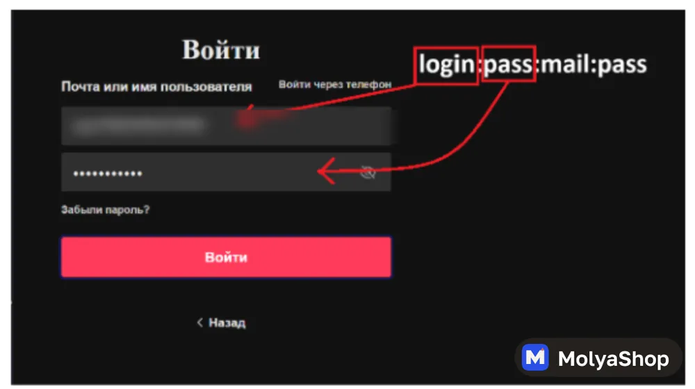
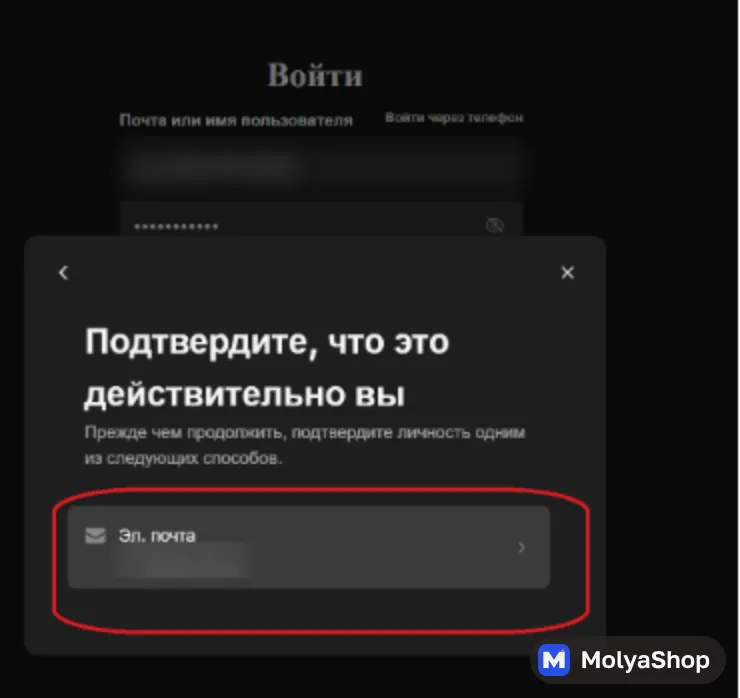
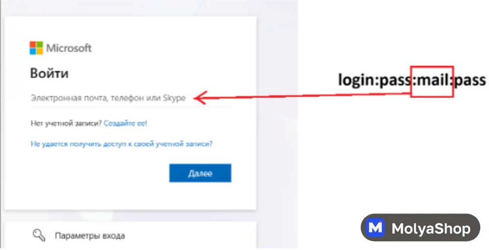
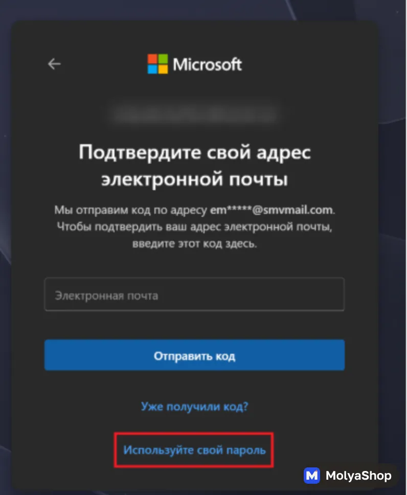
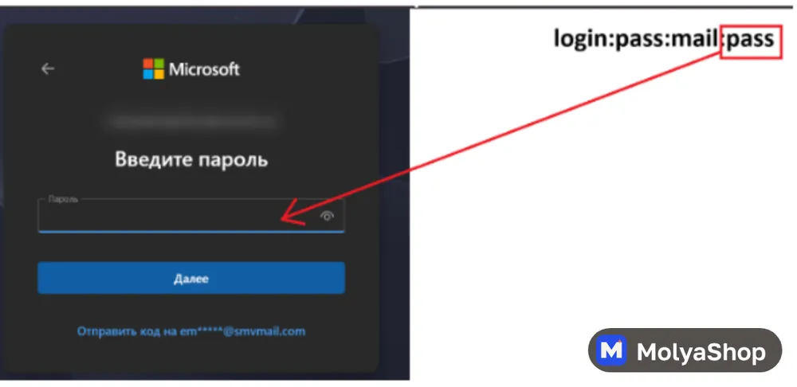
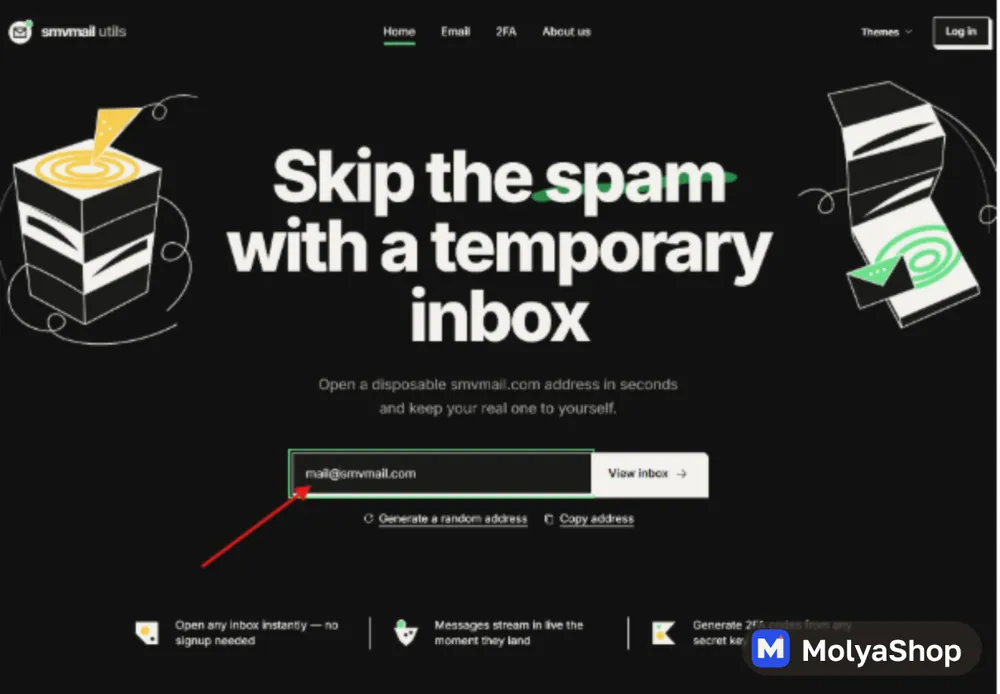
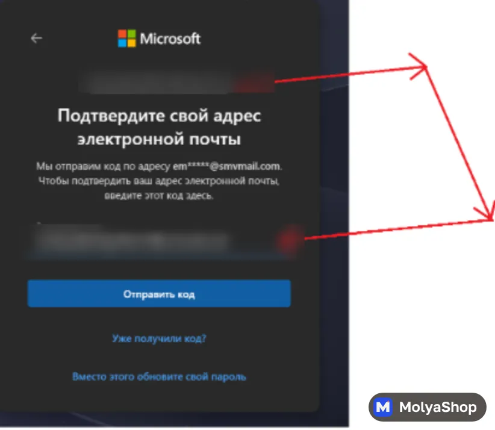
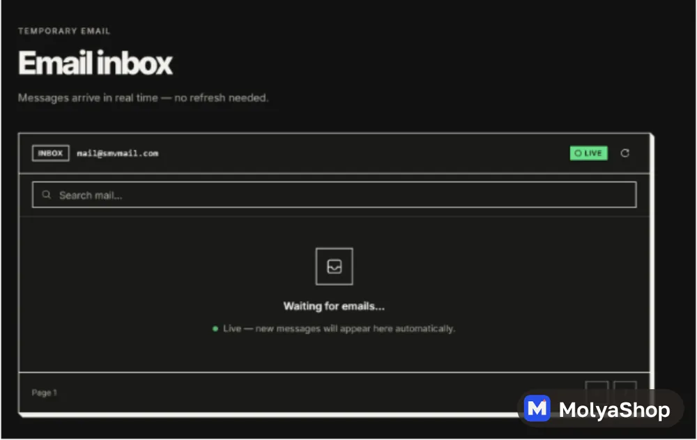
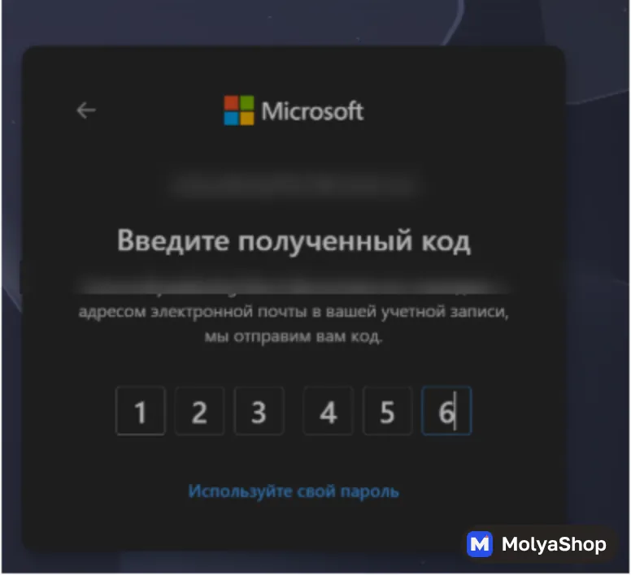
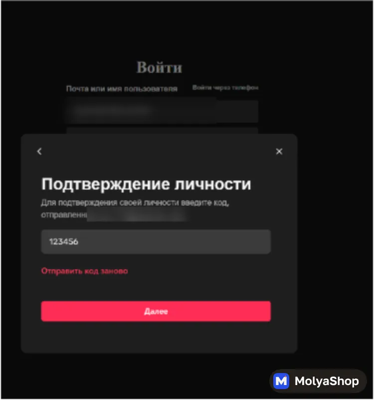

Помощь покупателю · TikTok
Как войти в аккаунт TikTok
После оплаты в чате заказа вы получите данные для входа одной строкой. Ниже показано, как ими пользоваться.
Что означают данные
login:pass:mail:pass
- login
- логин TikTok
- pass
- пароль от TikTok
- почта аккаунта
- pass
- пароль от почты
Вход в TikTok
-
1
Введите логин и пароль
Скопируйте первые два значения: логин и пароль от TikTok. Откройте страницу входа и вставьте их в поля, затем нажмите «Войти».
Вход в TikTok
-
2
Выберите «Эл. почта»
Если TikTok попросит подтвердить, что это вы, выберите «Эл. почта». Код придёт на почту аккаунта, дальше откроем её.

Откройте почту
Способ А: по паролю от почты.
-
3

-
4
Нажмите «Используйте свой пароль»
Если Microsoft предложит подтвердить почту кодом, нажмите внизу «Используйте свой пароль».

-
5
Введите пароль от почты
Вставьте четвёртое значение (пароль от почты) и нажмите «Далее». Вы в почте: найдите письмо с кодом и переходите к шагу 10.

Способ Б: по коду через резервную почту. Пригодится, если по паролю войти не получилось.
-
6
Откройте резервную почту
Откройте сайт smvmail. В адресе почты замените окончание @hotmail.com на @smvmail.com (например, mail@hotmail.com → mail@smvmail.com), вставьте его в поле и нажмите «View inbox».
smvmail.com
-
7
Запросите код
На странице Microsoft «Подтвердите свой адрес электронной почты» введите тот же адрес с окончанием @smvmail.com и нажмите «Отправить код».

-
8
Получите код
Письмо с кодом появится во входящих на smvmail само, обновлять страницу не нужно.

-
9
Введите код в Microsoft
Вставьте полученный код на странице Microsoft, и вы попадёте в почту. Найдите письмо с кодом для TikTok.

Завершите вход
-
10
Введите код в TikTok
Скопируйте код из письма, вставьте его в окне «Подтверждение личности» в TikTok и нажмите «Далее».

Готово, вы вошли в аккаунт.
Частые вопросы
Код не приходит. Что делать?
Код приходит на почту аккаунта: это третье значение в данных (mail). Проверьте, что открыли именно её, и загляните в папку «Нежелательная почта». Если письма нет, нажмите в TikTok «Отправить код заново».
Где взять код для входа в TikTok?
В почте аккаунта. Откройте её по паролю (шаги 3–5) или через резервную почту (шаги 6–9), найдите письмо с кодом и введите код в TikTok в окне «Подтверждение личности» (шаг 10).
Какие данные куда вводить?
Данные приходят строкой login:pass:mail:pass. В TikTok вводите первые два значения: логин и пароль. В почту Outlook вводите третье и четвёртое: адрес почты и пароль от неё.
Microsoft просит код, а не пароль
Нажмите внизу «Используйте свой пароль» и введите четвёртое значение, пароль от почты (шаги 4–5).
Не получается войти в почту по паролю
Войдите по коду через резервную почту: это способ Б, шаги 6–9.
Код не приходит на smvmail
Проверьте адрес: это почта аккаунта, у которой часть после @ заменена на smvmail.com. Один и тот же адрес нужно ввести и на smvmail, и на странице Microsoft. Письма появляются сами, обновлять страницу не нужно. Если письма нет, нажмите «Отправить код» ещё раз.
Ничего не помогло
Напишите нам в чат заказа на Playerok, поможем разобраться.
Инструкция от MolyaShop
Другие товары магазина есть в каталоге.